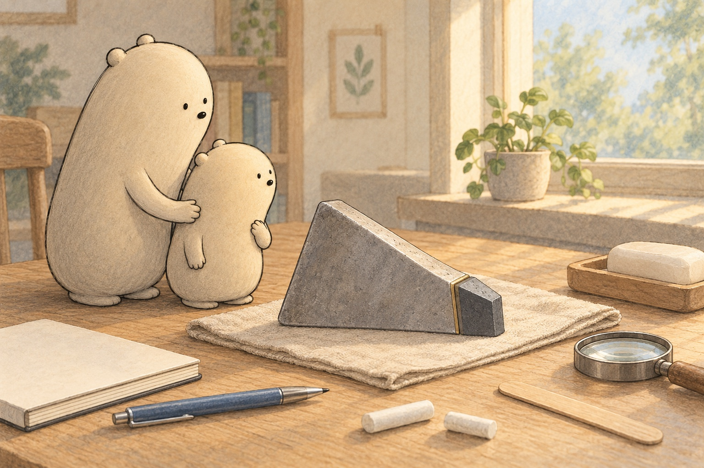

A little book of very hard things
Tungsten Carbide

A gray tip rested on a cloth. “Could that little piece do a big job?” asked Little Wonderer. “It is tungsten carbide,” said Big. “A material is what something is made of. This one is heavy for its size and very hard. But being hard does not mean it can never break.”

Little found another clue in a pen. Many ballpoint pens have a tiny tungsten-carbide ball that rolls ink onto paper. People make carbide by joining tungsten, a metal, with carbon. They press the powder and heat it very hot. A little cobalt metal usually holds the grains together, like glue.

Big set soap and a wooden craft stick on a tray. Little guessed what would happen, then watched. Big gently drew the stick across the soap. A scratch appeared: a small line dug into the surface. Hard means resisting scratches and dents. The soap gave way to the harder stick.
- hard
- able to resist scratches and dents
- tough
- able to resist cracking or breaking from bumps and bends
- brittle
- able to chip or crack instead of bending much
- scratch
- a small line dug into a surface
- tip
- the small end of something
- material
- what something is made of
- tungsten
- a heavy metal used to make tungsten carbide
- carbon
- an element that joins with tungsten to make tungsten carbide